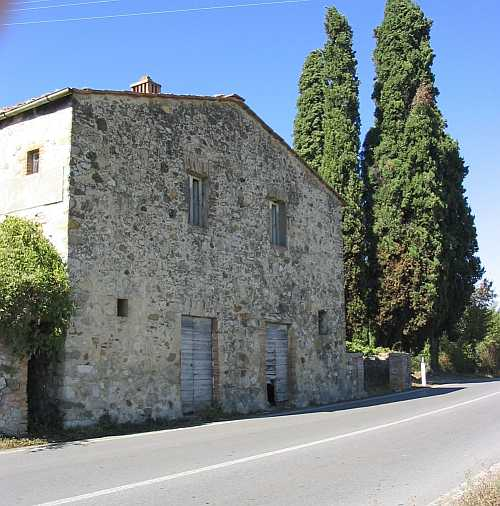
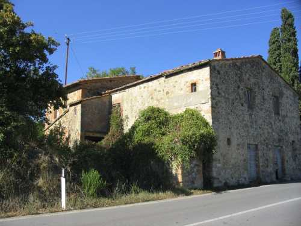
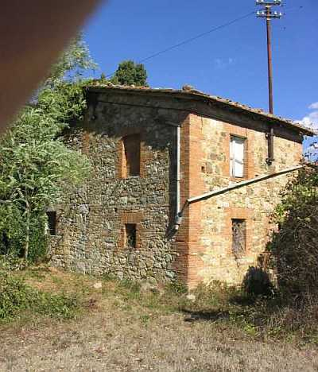
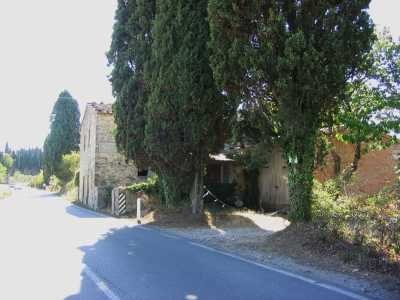

ARGINANINO
Piccolo podere, situato a circa un chilometro dalla piazza del paese, sulla sinistra venendo da Siena, nel Comune di Monteriggioni. La sua alta facciata cade sulla strada con la porta di ingresso che immette nella carreggiata. Nato di fronte al più antico ed esteso Larginano ne mutuo il nome e divenne Larginanino e, come l’altro, in tempi abbastanza recenti ha perduto la “L” iniziale ed è divenuto Arginanino. Nel 1926 al Comune di Monteriggioni usano ancora la vecchia grafia.
Pertinenza della parrocchia di S. Stefano - Basciano passerà a Quercegrossa nel 1884.
Podere della fattoria del Castellare era in origine una modesta casa per pigionali e salariati costruita non dai Fondi, padroni del Castellare sulle cui terre sorge, ma dall’affittuario mugnaio del Mulino di Quercegrossa, Bartalini, ai primi del Settecento e nel 1708 abbiamo la prima menzione del fabbricato. Nel 1750 si battezza a Basciano, Francesco di Giuseppe del già Mattia Massaini e di Caterina Gambassi abitante a Larginanino. Ancora nel 1774 è detto locagione del magnifico Antonio Bartalini che però non risiede più al Mulino di Quercegrossa. Nel 1811 abbiamo il dato della vendita al sig. Vannini padrone del Castellare che lo riunisce così alla fattoria. Da qui in avanti Larginanino non si staccherà più dal Castellare e i proprietari di quest’ultimo, saranno i suoi fino alla fine della mezzadria. Alla voce Castellare quindi potremo seguirne le vicende successive.

Nell’Ottocento l’Arginanino ospita tra le sue mura piccoli nuclei familiari composti dai tre ai sette componenti: artigiani, logaioli e barrocciai
"che coltivano le poche terre d’intorno". Tra il 1814 e il 1821 vi dimorano molte famiglie con una permanenza media di pochi mesi. Questo via vai cessa nel 1821 con il barrocciaio e venditore di stoffe Tommaso Naldini che vi rimane trent’anni morendovi nel 1853, lasciando la dimora ai figli. Dal 1874 risulta presente il muratore Giovanni Rossi, il nonno di Brunetto, e alla sua partenza nel 1891 si ha la trasformazione della casa da pigione a podere. In quell’anno, infatti, vi entra il 21 maggio la famiglia del colono Agostino Bichi. Arriveranno poi i Pruneti, i Buti (1907) con ricordi familiari sul servizio in casa dei padroni e la cura del cavallo della fattoria, i Bogi (1921), i Grassi (1926) i Mori (1931) e dal 1940 al 1960 la famiglia Losi che qui cessa il rapporto di mezzadria. L’ultima famiglia ad abitarvi sarà quella dei Petri che lascerà nel 1969/70. Tutte queste famiglie, formate da poche unità, lavoravano un podere abbastanza esteso di circa sei/sette ettari. Il fabbricato, dotato di stalla e castri facenti parte del corpo principale, aveva anche un proprio forno, costruito certamente a fine Ottocento e visibile nella foto, a sinistra della facciata. Per l’acqua usavano il pozzo dell’Arginano. Si notano molte aggiunte alla costruzione primitiva, frutto di continui e disordinati ampliamenti. In alto, sulla facciata, è murata una tabella votiva rappresentante S. Antonio, risalente probabilmente all’edificazione dello stabile. Sulle sue terre nel 1955 sorse il Poder Nuovo e ai Losi, come compenso, venne dato un pezzo di terra lungo il Bozzone.

Tutte le foto dell'Arginanino sono state scattate prima della ristrutturazione - Vista da nord-ovest

L'Arginanino visto dall'Arginano
Capitolo successivo Arginano
Inizio pagina
Indice dei Capitoli